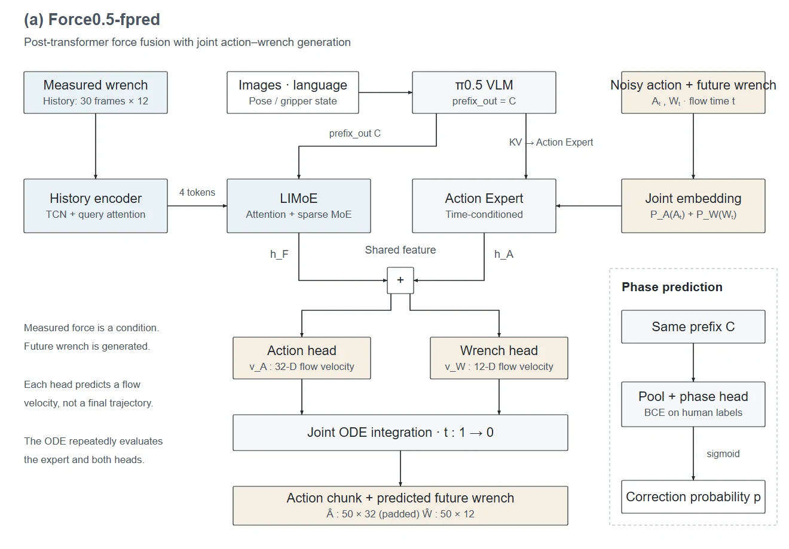

接触密集型操作的难点
π0.5 的原生状态主要包含位姿与夹爪信息。在插孔、擦黑板、削黄瓜等任务中，视觉难以直接反映接触力度，策略可能动作过猛或过轻。
单帧力信号噪声大、缺少升降趋势；新增力分支也可能干扰已经学到的视觉语言行为。
PROJECT 02 / FORCE-AWARE MANIPULATION
从力觉历史编码、动作与未来接触力联合预测，到 UR7e 双臂导纳控制：让视觉语言动作模型完成接触密集型操作。
01 / THE PROBLEM
π0.5 的原生状态主要包含位姿与夹爪信息。在插孔、擦黑板、削黄瓜等任务中，视觉难以直接反映接触力度，策略可能动作过猛或过轻。
单帧力信号噪声大、缺少升降趋势；新增力分支也可能干扰已经学到的视觉语言行为。
基于开源 openpi / π0.5 二次开发，在 UR7e 双臂真机上采集接触任务数据，比较两种力觉融合路线，实现动作与未来力联合预测，并接入导纳控制。
工作贯穿数据采集、模型改造、微调与真机闭环部署。

02 / FORCE-AWARE POLICY
在主干 Transformer 后，通过 LIMoE 融合实测力与视觉语言特征，再与 Action Expert 隐藏特征相加，经输出投影生成动作。
将力编码为 tactile tokens，前置到动作专家序列中参与注意力交互。力 token 输出投影与模态嵌入采用零初始化，减小微调初期的输入扰动。
两条基础路线使用对齐的数据、归一化和训练配置进行比较。

两条路线均引入因果时序卷积与可学习查询交叉注意力，将过去 30 帧力 / 力矩压缩为 4 个 token，为策略提供接触变化趋势。
03 / PREDICTION TO CONTROL
Force0.5-fpred 将带噪的未来 wrench 嵌入动作 token，在共享特征上设置独立动作头和力 / 力矩头。推理时同步积分，生成动作块及对应的双臂 12 维力 / 力矩轨迹。
对视觉、语言与位姿上下文池化，使用人工阶段标签和 BCE 损失训练 VLM 二分类头，为导纳控制提供阶段判断信号，避免仅依赖单一力阈值。
04 / REAL-ROBOT DEMONSTRATIONS
简历报告了插孔、削黄瓜类任务相对纯视觉基线的成功率与效率改进，但未附统一的量化结果和试验次数。本页呈现实机演示，不将片段视为总体成功率。
依据简历项目二与作品集第 6–9 页整理。ForceVLA 为实习研究与工程项目，本页不标注论文录用或发表状态。
阅读原始作品集 ↗